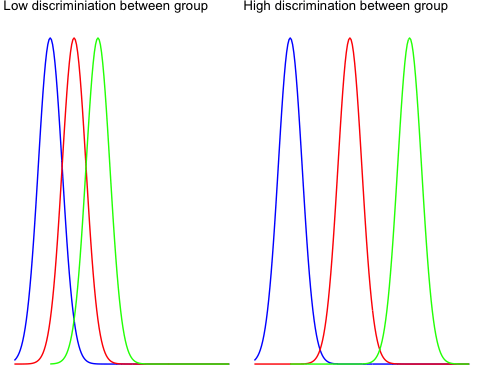
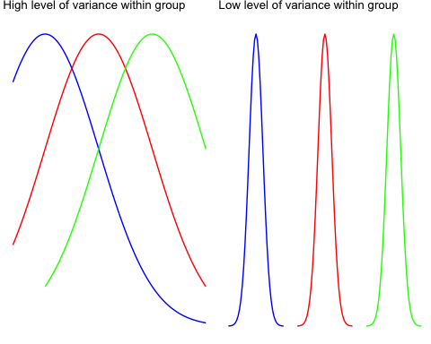
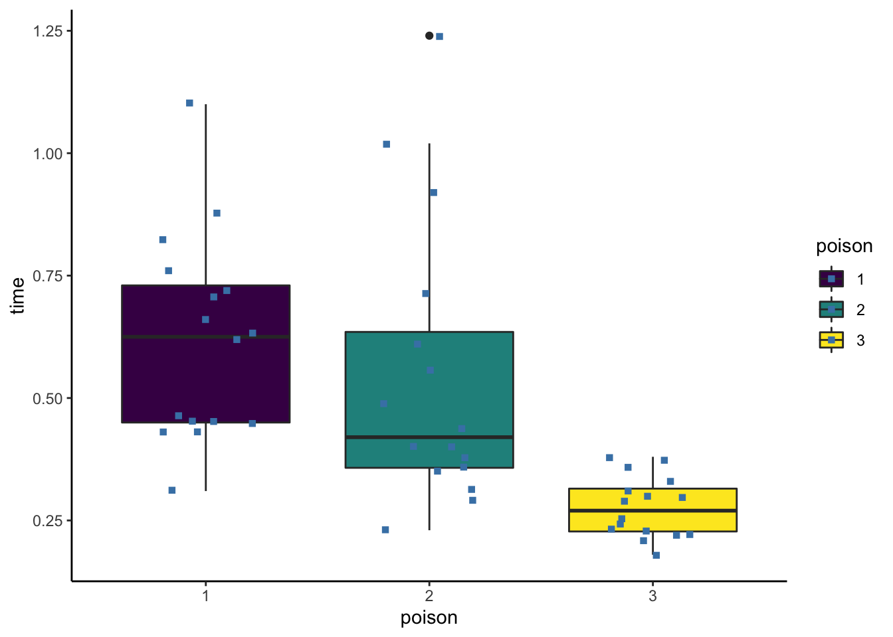
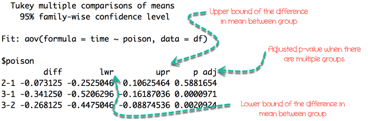

<!DOCTYPE html>

<html>

<head>

<meta charset="utf-8" />
<meta name="generator" content="pandoc" />
<meta http-equiv="X-UA-Compatible" content="IE=EDGE" />


<title>Lesson 22</title>

<script src="site_libs/jquery-1.11.3/jquery.min.js"></script>
<meta name="viewport" content="width=device-width, initial-scale=1" />
<link href="site_libs/bootstrap-3.3.5/css/flatly.min.css" rel="stylesheet" />
<script src="site_libs/bootstrap-3.3.5/js/bootstrap.min.js"></script>
<script src="site_libs/bootstrap-3.3.5/shim/html5shiv.min.js"></script>
<script src="site_libs/bootstrap-3.3.5/shim/respond.min.js"></script>
<script src="site_libs/jqueryui-1.11.4/jquery-ui.min.js"></script>
<link href="site_libs/tocify-1.9.1/jquery.tocify.css" rel="stylesheet" />
<script src="site_libs/tocify-1.9.1/jquery.tocify.js"></script>
<script src="site_libs/navigation-1.1/tabsets.js"></script>
<script src="site_libs/accessible-code-block-0.0.1/empty-anchor.js"></script>
<script src="site_libs/kePrint-0.0.1/kePrint.js"></script>
<link href="site_libs/lightable-0.0.1/lightable.css" rel="stylesheet" />
<link href="site_libs/font-awesome-5.1.0/css/all.css" rel="stylesheet" />
<link href="site_libs/font-awesome-5.1.0/css/v4-shims.css" rel="stylesheet" />
<!DOCTYPE html PUBLIC "-//W3C//DTD HTML 4.01//EN" "http://www.w3.org/TR/html4/strict.dtd">
<html>
<head>
  <meta http-equiv="Content-Type" content="text/html; charset=utf-8">
  <meta http-equiv="Content-Style-Type" content="text/css">
  <title></title>
  <meta name="Generator" content="Cocoa HTML Writer">
  <meta name="CocoaVersion" content="1504">
  <!-- this script changes the anchor position -->
  <!-- http://jsfiddle.net/ianclark001/rkocah23/ -->
<script>
(function(document, history, location) {
  var HISTORY_SUPPORT = !!(history && history.pushState);

  var anchorScrolls = {
    ANCHOR_REGEX: /^#[^ ]+$/,
    OFFSET_HEIGHT_PX: 65,

    /**
     * Establish events, and fix initial scroll position if a hash is provided.
     */
    init: function() {
      this.scrollToCurrent();
      $(window).on('hashchange', $.proxy(this, 'scrollToCurrent'));
      $('body').on('click', 'a', $.proxy(this, 'delegateAnchors'));
    },

    /**
     * Return the offset amount to deduct from the normal scroll position.
     * Modify as appropriate to allow for dynamic calculations
     */
    getFixedOffset: function() {
      return this.OFFSET_HEIGHT_PX;
    },

    /**
     * If the provided href is an anchor which resolves to an element on the
     * page, scroll to it.
     * @param  {String} href
     * @return {Boolean} - Was the href an anchor.
     */
    scrollIfAnchor: function(href, pushToHistory) {
      var match, anchorOffset;

      if(!this.ANCHOR_REGEX.test(href)) {
        return false;
      }

      match = document.getElementById(href.slice(1));

      if(match) {
        anchorOffset = $(match).offset().top - this.getFixedOffset();
        $('html, body').animate({ scrollTop: anchorOffset});

        // Add the state to history as-per normal anchor links
        if(HISTORY_SUPPORT && pushToHistory) {
          history.pushState({}, document.title, location.pathname + href);
        }
      }

      return !!match;
    },
    
    /**
     * Attempt to scroll to the current location's hash.
     */
    scrollToCurrent: function(e) {
      if(this.scrollIfAnchor(window.location.hash) && e) {
        e.preventDefault();
      }
    },

    /**
     * If the click event's target was an anchor, fix the scroll position.
     */
    delegateAnchors: function(e) {
      var elem = e.target;

      if(this.scrollIfAnchor(elem.getAttribute('href'), true)) {
        e.preventDefault();
      }
    }
  };

    $(document).ready($.proxy(anchorScrolls, 'init'));
})(window.document, window.history, window.location);
</script>

</head>
<body>
</body>
</html>


<style type="text/css">code{white-space: pre;}</style>
<style type="text/css" data-origin="pandoc">
code.sourceCode > span { display: inline-block; line-height: 1.25; }
code.sourceCode > span { color: inherit; text-decoration: inherit; }
code.sourceCode > span:empty { height: 1.2em; }
.sourceCode { overflow: visible; }
code.sourceCode { white-space: pre; position: relative; }
div.sourceCode { margin: 1em 0; }
pre.sourceCode { margin: 0; }
@media screen {
div.sourceCode { overflow: auto; }
}
@media print {
code.sourceCode { white-space: pre-wrap; }
code.sourceCode > span { text-indent: -5em; padding-left: 5em; }
}
pre.numberSource code
  { counter-reset: source-line 0; }
pre.numberSource code > span
  { position: relative; left: -4em; counter-increment: source-line; }
pre.numberSource code > span > a:first-child::before
  { content: counter(source-line);
    position: relative; left: -1em; text-align: right; vertical-align: baseline;
    border: none; display: inline-block;
    -webkit-touch-callout: none; -webkit-user-select: none;
    -khtml-user-select: none; -moz-user-select: none;
    -ms-user-select: none; user-select: none;
    padding: 0 4px; width: 4em;
    color: #aaaaaa;
  }
pre.numberSource { margin-left: 3em; border-left: 1px solid #aaaaaa;  padding-left: 4px; }
div.sourceCode
  {   }
@media screen {
code.sourceCode > span > a:first-child::before { text-decoration: underline; }
}
code span.al { color: #ff0000; font-weight: bold; } /* Alert */
code span.an { color: #60a0b0; font-weight: bold; font-style: italic; } /* Annotation */
code span.at { color: #7d9029; } /* Attribute */
code span.bn { color: #40a070; } /* BaseN */
code span.bu { } /* BuiltIn */
code span.cf { color: #007020; font-weight: bold; } /* ControlFlow */
code span.ch { color: #4070a0; } /* Char */
code span.cn { color: #880000; } /* Constant */
code span.co { color: #60a0b0; font-style: italic; } /* Comment */
code span.cv { color: #60a0b0; font-weight: bold; font-style: italic; } /* CommentVar */
code span.do { color: #ba2121; font-style: italic; } /* Documentation */
code span.dt { color: #902000; } /* DataType */
code span.dv { color: #40a070; } /* DecVal */
code span.er { color: #ff0000; font-weight: bold; } /* Error */
code span.ex { } /* Extension */
code span.fl { color: #40a070; } /* Float */
code span.fu { color: #06287e; } /* Function */
code span.im { } /* Import */
code span.in { color: #60a0b0; font-weight: bold; font-style: italic; } /* Information */
code span.kw { color: #007020; font-weight: bold; } /* Keyword */
code span.op { color: #666666; } /* Operator */
code span.ot { color: #007020; } /* Other */
code span.pp { color: #bc7a00; } /* Preprocessor */
code span.sc { color: #4070a0; } /* SpecialChar */
code span.ss { color: #bb6688; } /* SpecialString */
code span.st { color: #4070a0; } /* String */
code span.va { color: #19177c; } /* Variable */
code span.vs { color: #4070a0; } /* VerbatimString */
code span.wa { color: #60a0b0; font-weight: bold; font-style: italic; } /* Warning */

</style>
<script>
// apply pandoc div.sourceCode style to pre.sourceCode instead
(function() {
  var sheets = document.styleSheets;
  for (var i = 0; i < sheets.length; i++) {
    if (sheets[i].ownerNode.dataset["origin"] !== "pandoc") continue;
    try { var rules = sheets[i].cssRules; } catch (e) { continue; }
    for (var j = 0; j < rules.length; j++) {
      var rule = rules[j];
      // check if there is a div.sourceCode rule
      if (rule.type !== rule.STYLE_RULE || rule.selectorText !== "div.sourceCode") continue;
      var style = rule.style.cssText;
      // check if color or background-color is set
      if (rule.style.color === '' && rule.style.backgroundColor === '') continue;
      // replace div.sourceCode by a pre.sourceCode rule
      sheets[i].deleteRule(j);
      sheets[i].insertRule('pre.sourceCode{' + style + '}', j);
    }
  }
})();
</script>
<style type="text/css">
  pre:not([class]) {
    background-color: white;
  }
</style>


<style type="text/css">
h1 {
  font-size: 34px;
}
h1.title {
  font-size: 38px;
}
h2 {
  font-size: 30px;
}
h3 {
  font-size: 24px;
}
h4 {
  font-size: 18px;
}
h5 {
  font-size: 16px;
}
h6 {
  font-size: 12px;
}
.table th:not([align]) {
  text-align: left;
}
</style>

<link rel="stylesheet" href="style.css" type="text/css" />


<style type = "text/css">
.main-container {
  max-width: 940px;
  margin-left: auto;
  margin-right: auto;
}
code {
  color: inherit;
  background-color: rgba(0, 0, 0, 0.04);
}
img {
  max-width:100%;
}
.tabbed-pane {
  padding-top: 12px;
}
.html-widget {
  margin-bottom: 20px;
}
button.code-folding-btn:focus {
  outline: none;
}
summary {
  display: list-item;
}
</style>


<style type="text/css">
/* padding for bootstrap navbar */
body {
  padding-top: 60px;
  padding-bottom: 40px;
}
/* offset scroll position for anchor links (for fixed navbar)  */
.section h1 {
  padding-top: 65px;
  margin-top: -65px;
}
.section h2 {
  padding-top: 65px;
  margin-top: -65px;
}
.section h3 {
  padding-top: 65px;
  margin-top: -65px;
}
.section h4 {
  padding-top: 65px;
  margin-top: -65px;
}
.section h5 {
  padding-top: 65px;
  margin-top: -65px;
}
.section h6 {
  padding-top: 65px;
  margin-top: -65px;
}
.dropdown-submenu {
  position: relative;
}
.dropdown-submenu>.dropdown-menu {
  top: 0;
  left: 100%;
  margin-top: -6px;
  margin-left: -1px;
  border-radius: 0 6px 6px 6px;
}
.dropdown-submenu:hover>.dropdown-menu {
  display: block;
}
.dropdown-submenu>a:after {
  display: block;
  content: " ";
  float: right;
  width: 0;
  height: 0;
  border-color: transparent;
  border-style: solid;
  border-width: 5px 0 5px 5px;
  border-left-color: #cccccc;
  margin-top: 5px;
  margin-right: -10px;
}
.dropdown-submenu:hover>a:after {
  border-left-color: #ffffff;
}
.dropdown-submenu.pull-left {
  float: none;
}
.dropdown-submenu.pull-left>.dropdown-menu {
  left: -100%;
  margin-left: 10px;
  border-radius: 6px 0 6px 6px;
}
</style>

<script>
// manage active state of menu based on current page
$(document).ready(function () {
  // active menu anchor
  href = window.location.pathname
  href = href.substr(href.lastIndexOf('/') + 1)
  if (href === "")
    href = "index.html";
  var menuAnchor = $('a[href="' + href + '"]');

  // mark it active
  menuAnchor.parent().addClass('active');

  // if it's got a parent navbar menu mark it active as well
  menuAnchor.closest('li.dropdown').addClass('active');
});
</script>

<!-- tabsets -->

<style type="text/css">
.tabset-dropdown > .nav-tabs {
  display: inline-table;
  max-height: 500px;
  min-height: 44px;
  overflow-y: auto;
  background: white;
  border: 1px solid #ddd;
  border-radius: 4px;
}

.tabset-dropdown > .nav-tabs > li.active:before {
  content: "";
  font-family: 'Glyphicons Halflings';
  display: inline-block;
  padding: 10px;
  border-right: 1px solid #ddd;
}

.tabset-dropdown > .nav-tabs.nav-tabs-open > li.active:before {
  content: "&#xe258;";
  border: none;
}

.tabset-dropdown > .nav-tabs.nav-tabs-open:before {
  content: "";
  font-family: 'Glyphicons Halflings';
  display: inline-block;
  padding: 10px;
  border-right: 1px solid #ddd;
}

.tabset-dropdown > .nav-tabs > li.active {
  display: block;
}

.tabset-dropdown > .nav-tabs > li > a,
.tabset-dropdown > .nav-tabs > li > a:focus,
.tabset-dropdown > .nav-tabs > li > a:hover {
  border: none;
  display: inline-block;
  border-radius: 4px;
  background-color: transparent;
}

.tabset-dropdown > .nav-tabs.nav-tabs-open > li {
  display: block;
  float: none;
}

.tabset-dropdown > .nav-tabs > li {
  display: none;
}
</style>

<!-- code folding -->


<style type="text/css">

#TOC {
  margin: 25px 0px 20px 0px;
}
@media (max-width: 768px) {
#TOC {
  position: relative;
  width: 100%;
}
}

@media print {
.toc-content {
  /* see https://github.com/w3c/csswg-drafts/issues/4434 */
  float: right;
}
}

.toc-content {
  padding-left: 30px;
  padding-right: 40px;
}

div.main-container {
  max-width: 1200px;
}

div.tocify {
  width: 20%;
  max-width: 260px;
  max-height: 85%;
}

@media (min-width: 768px) and (max-width: 991px) {
  div.tocify {
    width: 25%;
  }
}

@media (max-width: 767px) {
  div.tocify {
    width: 100%;
    max-width: none;
  }
}

.tocify ul, .tocify li {
  line-height: 20px;
}

.tocify-subheader .tocify-item {
  font-size: 0.90em;
}

.tocify .list-group-item {
  border-radius: 0px;
}


</style>


</head>

<body>


<div class="container-fluid main-container">


<!-- setup 3col/9col grid for toc_float and main content  -->
<div class="row-fluid">
<div class="col-xs-12 col-sm-4 col-md-3">
<div id="TOC" class="tocify">
</div>
</div>

<div class="toc-content col-xs-12 col-sm-8 col-md-9">


<div class="navbar navbar-default  navbar-fixed-top" role="navigation">
  <div class="container">
    <div class="navbar-header">
      <button type="button" class="navbar-toggle collapsed" data-toggle="collapse" data-target="#navbar">
        <span class="icon-bar"></span>
        <span class="icon-bar"></span>
        <span class="icon-bar"></span>
      </button>
      <a class="navbar-brand" href="index.html">An R Tutorial for Beginners</a>
    </div>
    <div id="navbar" class="navbar-collapse collapse">
      <ul class="nav navbar-nav">
        <li>
  <a href="index.html">
    <span class="fa fa-home"></span>
     
    Home
  </a>
</li>
<li>
  <a href="about.html">
    <span class="fa fa-info-circle"></span>
     
    About
  </a>
</li>
<li class="dropdown">
  <a href="#" class="dropdown-toggle" data-toggle="dropdown" role="button" aria-expanded="false">
    <span class="fa fa-bars"></span>
     
    Lessons
     
    <span class="caret"></span>
  </a>
  <ul class="dropdown-menu" role="menu">
    <li class="dropdown-submenu">
      <a href="#" class="dropdown-toggle" data-toggle="dropdown" role="button" aria-expanded="false">Introduction</a>
      <ul class="dropdown-menu" role="menu">
        <li>
          <a href="R-course_lesson-1.html">Lesson 1</a>
        </li>
        <li>
          <a href="R-course_lesson-2.html">Lesson 2</a>
        </li>
        <li>
          <a href="R-course_lesson-3.html">Lesson 3</a>
        </li>
        <li>
          <a href="R-course_lesson-4.html">Lesson 4</a>
        </li>
      </ul>
    </li>
    <li class="dropdown-submenu">
      <a href="#" class="dropdown-toggle" data-toggle="dropdown" role="button" aria-expanded="false">Data Preparation</a>
      <ul class="dropdown-menu" role="menu">
        <li>
          <a href="R-course_lesson-5.html">Lesson 5</a>
        </li>
        <li>
          <a href="R-course_lesson-6.html">Lesson 6</a>
        </li>
        <li>
          <a href="R-course_lesson-7.html">Lesson 7</a>
        </li>
        <li>
          <a href="R-course_lesson-8.html">Lesson 8</a>
        </li>
        <li>
          <a href="R-course_lesson-9.html">Lesson 9</a>
        </li>
      </ul>
    </li>
    <li class="dropdown-submenu">
      <a href="#" class="dropdown-toggle" data-toggle="dropdown" role="button" aria-expanded="false">Programming</a>
      <ul class="dropdown-menu" role="menu">
        <li>
          <a href="R-course_lesson-10.html">Lesson 10</a>
        </li>
        <li>
          <a href="R-course_lesson-11.html">Lesson 11</a>
        </li>
        <li>
          <a href="R-course_lesson-12.html">Lesson 12</a>
        </li>
        <li>
          <a href="R-course_lesson-13.html">Lesson 13</a>
        </li>
        <li>
          <a href="R-course_lesson-14.html">Lesson 14</a>
        </li>
        <li>
          <a href="R-course_lesson-15.html">Lesson 15</a>
        </li>
        <li>
          <a href="R-course_lesson-16.html">Lesson 16</a>
        </li>
        <li>
          <a href="R-course_lesson-17.html">Lesson 17</a>
        </li>
      </ul>
    </li>
    <li class="dropdown-submenu">
      <a href="#" class="dropdown-toggle" data-toggle="dropdown" role="button" aria-expanded="false">Data Analysis</a>
      <ul class="dropdown-menu" role="menu">
        <li>
          <a href="R-course_lesson-18.html">Lesson 18</a>
        </li>
        <li>
          <a href="R-course_lesson-19.html">Lesson 19</a>
        </li>
        <li>
          <a href="R-course_lesson-20.html">Lesson 20</a>
        </li>
        <li>
          <a href="R-course_lesson-21.html">Lesson 21</a>
        </li>
      </ul>
    </li>
  </ul>
</li>
      </ul>
      <ul class="nav navbar-nav navbar-right">
        
      </ul>
    </div><!--/.nav-collapse -->
  </div><!--/.container -->
</div><!--/.navbar -->

<div class="fluid-row" id="header">


<h1 class="title toc-ignore">ANOVA: One way &amp; Two way (with Examples)</h1>

</div>


<div id="what-is-anova" class="section level1">
<h1>What is ANOVA?</h1>
<p><strong>Analysis of Variance (ANOVA)</strong> is a statistical technique, commonly used to studying differences between two or more group means. ANOVA test is centred on the different sources of variation in a typical variable. ANOVA in R primarily provides evidence of the existence of the mean equality between the groups. This statistical method is an extension of the t-test. It is used in a situation where the factor variable has more than one group.</p>
</div>
<div id="one-way-anova" class="section level1">
<h1>One-way ANOVA</h1>
<p>There are many situations where you need to compare the mean between multiple groups. For instance, the marketing department wants to know if three teams have the same sales performance.</p>
<ul>
<li>Team: 3 level factor: A, B, and C</li>
<li>Sale: A measure of performance</li>
</ul>
<p>The ANOVA test can tell if the three groups have similar performances. To clarify if the data comes from the same population, you can perform a <strong>one-way analysis of variance</strong> (one-way ANOVA hereafter). This test, like any other statistical tests, gives evidence whether the H0 hypothesis can be accepted or rejected.</p>
<div id="hypothesis-in-one-way-anova-test" class="section level2">
<h2>Hypothesis in one-way ANOVA test:</h2>
<ul>
<li>H0: The means between groups are identical</li>
<li>H1: At least, the mean of one group is different</li>
</ul>
<p>In other words, the H0 hypothesis implies that there is not enough evidence to prove the mean of the group (factor) are different from another.</p>
<p>This test is similar to the t-test, although ANOVA test is recommended in situation with more than 2 groups. Except that, the t-test and ANOVA provide similar results.</p>
</div>
<div id="assumptions" class="section level2">
<h2>Assumptions</h2>
<p>We assume that each factor is randomly sampled, independent and comes from a normally distributed population with unknown but equal variances.</p>
</div>
<div id="interpret-anova-test" class="section level2">
<h2>Interpret ANOVA test</h2>
<p>The F-statistic is used to test if the data are from significantly different populations, i.e., different sample means.</p>
<p>To compute the F-statistic, you need to divide the <strong>between-group variability</strong> over the <strong>within-group variability</strong>.</p>
<p>The <strong>between-group variability</strong> reflects the differences between the groups inside all of the population. Look at the two graphs below to understand the concept of between-group variance.</p>
<p>The left graph shows very little variation between the three group, and it is very likely that the three means tends to the overall mean (i.e., mean for the three groups).</p>
<p>The right graph plots three distributions far apart, and none of them overlap. There is a high chance the difference between the total mean and the groups mean will be large.</p>
<p align="center">

</p>
<p>The <strong>within group variability</strong> considers the difference between the groups. The variation comes from the individual observations; some points might be totally different than the group means. The within group variability picks up this effect and refer to the sampling error.</p>
<p>To understand visually the concept of within group variability, look at the graph below.</p>
<p>The left part plots the distribution of three different groups. You increased the spread of each sample and it is clear the individual variance is large. The F-test will decrease, meaning you tend to accept the null hypothesis</p>
<p>The right part shows exactly the same samples (identical mean) but with lower variability. It leads to an increase of the F-test and tends in favor of the alternative hypothesis.</p>
<p align="center">

</p>
<p>You can use both measures to construct the F-statistics. It is very intuitive to understand the F-statistic. If the numerator increases, it means the between-group variability is high, and it is likely the groups in the sample are drawn from completely different distributions.</p>
<p>In other words, a low F-statistic indicates little or no significant difference between the group’s average.</p>
</div>
<div id="example-one-way-anova-test" class="section level2">
<h2>Example One way ANOVA Test</h2>
<p>You will use the poison dataset to implement the one-way ANOVA test. The dataset contains 48 rows and 3 variables:</p>
<ul>
<li>Time: Survival time of the animal</li>
<li>poison: Type of poison used: factor level: 1,2 and 3</li>
<li>treat: Type of treatment used: factor level: 1,2 and 3</li>
</ul>
<p>Before you start to compute the ANOVA test, you need to prepare the data as follow:</p>
<ul>
<li>Step 1: Import the data</li>
<li>Step 2: Remove unnecessary variable</li>
<li>Step 3: Convert the variable poison as ordered level</li>
</ul>
<div class="sourceCode" id="cb1"><pre class="sourceCode r"><code class="sourceCode r"><span id="cb1-1"><a href="#cb1-1"></a><span class="kw">library</span>(dplyr)</span>
<span id="cb1-2"><a href="#cb1-2"></a>PATH &lt;-<span class="st"> &quot;https://raw.githubusercontent.com/guru99-edu/R-Programming/master/poisons.csv&quot;</span></span>
<span id="cb1-3"><a href="#cb1-3"></a>df &lt;-<span class="st"> </span><span class="kw">read.csv</span>(PATH) <span class="op">%&gt;%</span><span class="st"> </span><span class="kw">select</span>(<span class="op">-</span>X) <span class="op">%&gt;%</span><span class="st"> </span><span class="kw">mutate</span>(<span class="dt">poison =</span> <span class="kw">factor</span>(poison, <span class="dt">ordered =</span> <span class="ot">TRUE</span>))</span>
<span id="cb1-4"><a href="#cb1-4"></a><span class="kw">glimpse</span>(df)</span></code></pre></div>
<pre><code>## Rows: 48
## Columns: 3
## $ time   &lt;dbl&gt; 0.31, 0.45, 0.46, 0.43, 0.36, 0.29, 0.40, 0.23, 0.22, 0.21, 0.…
## $ poison &lt;ord&gt; 1, 1, 1, 1, 2, 2, 2, 2, 3, 3, 3, 3, 1, 1, 1, 1, 2, 2, 2, 2, 3,…
## $ treat  &lt;chr&gt; &quot;A&quot;, &quot;A&quot;, &quot;A&quot;, &quot;A&quot;, &quot;A&quot;, &quot;A&quot;, &quot;A&quot;, &quot;A&quot;, &quot;A&quot;, &quot;A&quot;, &quot;A&quot;, &quot;A&quot;, &quot;B…</code></pre>
<p>Our objective is to test the following assumption:</p>
<ul>
<li>H0: There is no difference in survival time average between group</li>
<li>H1: The survival time average is different for at least one group.</li>
</ul>
<p>In other words, you want to know if there is a statistical difference between the mean of the survival time according to the type of poison given to the Guinea pig.</p>
<p>You will proceed as follow:</p>
<ul>
<li>Step 1: Check the format of the variable poison</li>
<li>Step 2: Print the summary statistic: count, mean and standard deviation</li>
<li>Step 3: Plot a box plot</li>
<li>Step 4: Compute the one-way ANOVA test</li>
<li>Step 5: Run a pairwise t-test</li>
</ul>
<p><strong>Step 1)</strong> You can check the level of the poison with the following code. You should see three character values because you convert them in factor with the mutate verb.</p>
<div class="sourceCode" id="cb3"><pre class="sourceCode r"><code class="sourceCode r"><span id="cb3-1"><a href="#cb3-1"></a><span class="kw">levels</span>(df<span class="op">$</span>poison)</span></code></pre></div>
<pre><code>## [1] &quot;1&quot; &quot;2&quot; &quot;3&quot;</code></pre>
<p><strong>Step 2)</strong> You compute the mean and standard deviation.</p>
<div class="sourceCode" id="cb5"><pre class="sourceCode r"><code class="sourceCode r"><span id="cb5-1"><a href="#cb5-1"></a>df <span class="op">%&gt;%</span></span>
<span id="cb5-2"><a href="#cb5-2"></a><span class="st">    </span><span class="kw">group_by</span>(poison) <span class="op">%&gt;%</span></span>
<span id="cb5-3"><a href="#cb5-3"></a><span class="st">    </span><span class="kw">summarise</span>(</span>
<span id="cb5-4"><a href="#cb5-4"></a>        <span class="dt">count_poison =</span> <span class="kw">n</span>(),</span>
<span id="cb5-5"><a href="#cb5-5"></a>        <span class="dt">mean_time =</span> <span class="kw">mean</span>(time, <span class="dt">na.rm =</span> <span class="ot">TRUE</span>),</span>
<span id="cb5-6"><a href="#cb5-6"></a>        <span class="dt">sd_time =</span> <span class="kw">sd</span>(time, <span class="dt">na.rm =</span> <span class="ot">TRUE</span>)</span>
<span id="cb5-7"><a href="#cb5-7"></a>    )</span></code></pre></div>
<div class="kable-table">
<table>
<thead>
<tr class="header">
<th align="left">poison</th>
<th align="right">count_poison</th>
<th align="right">mean_time</th>
<th align="right">sd_time</th>
</tr>
</thead>
<tbody>
<tr class="odd">
<td align="left">1</td>
<td align="right">16</td>
<td align="right">0.617500</td>
<td align="right">0.2094278</td>
</tr>
<tr class="even">
<td align="left">2</td>
<td align="right">16</td>
<td align="right">0.544375</td>
<td align="right">0.2893664</td>
</tr>
<tr class="odd">
<td align="left">3</td>
<td align="right">16</td>
<td align="right">0.276250</td>
<td align="right">0.0622763</td>
</tr>
</tbody>
</table>
</div>
<p><strong>Step 3)</strong> In step three, you can graphically check if there is a difference between the distribution. Note that you include the jittered dot.</p>
<div class="sourceCode" id="cb6"><pre class="sourceCode r"><code class="sourceCode r"><span id="cb6-1"><a href="#cb6-1"></a><span class="kw">library</span>(ggplot2)</span>
<span id="cb6-2"><a href="#cb6-2"></a><span class="kw">ggplot</span>(df, <span class="kw">aes</span>(<span class="dt">x =</span> poison, <span class="dt">y =</span> time, <span class="dt">fill =</span> poison)) <span class="op">+</span></span>
<span id="cb6-3"><a href="#cb6-3"></a><span class="st">    </span><span class="kw">geom_boxplot</span>() <span class="op">+</span></span>
<span id="cb6-4"><a href="#cb6-4"></a><span class="st">    </span><span class="kw">geom_jitter</span>(<span class="dt">shape =</span> <span class="dv">15</span>,</span>
<span id="cb6-5"><a href="#cb6-5"></a>        <span class="dt">color =</span> <span class="st">&quot;steelblue&quot;</span>,</span>
<span id="cb6-6"><a href="#cb6-6"></a>        <span class="dt">position =</span> <span class="kw">position_jitter</span>(<span class="fl">0.21</span>)) <span class="op">+</span></span>
<span id="cb6-7"><a href="#cb6-7"></a><span class="st">    </span><span class="kw">theme_classic</span>()</span></code></pre></div>
<p></p>
<p><strong>Step 4)</strong> You can run the one-way ANOVA test with the command aov. The basic syntax for an ANOVA test is:</p>
<div class="sourceCode" id="cb7"><pre class="sourceCode r"><code class="sourceCode r"><span id="cb7-1"><a href="#cb7-1"></a><span class="kw">aov</span>(formula, data)</span></code></pre></div>
<p><strong>arguments:</strong></p>
<ul>
<li>formula: The equation you want to estimate</li>
<li>data: The dataset used</li>
</ul>
<p>The syntax of the formula is:</p>
<div class="sourceCode" id="cb8"><pre class="sourceCode r"><code class="sourceCode r"><span id="cb8-1"><a href="#cb8-1"></a>y <span class="op">~</span><span class="st"> </span>X1<span class="op">+</span><span class="st"> </span>X2<span class="op">+</span>...<span class="op">+</span>Xn <span class="co"># X1 +  X2 +... refers to the independent variables</span></span>
<span id="cb8-2"><a href="#cb8-2"></a>y <span class="op">~</span><span class="st"> </span>. <span class="co"># use all the remaining variables as independent variables</span></span></code></pre></div>
<p>You can answer our question: Is there any difference in the survival time between the Guinea pig, knowing the type of poison given.</p>
<p>Note that, it is advised to store the model and use the function summary() to get a better print of the results.</p>
<div class="sourceCode" id="cb9"><pre class="sourceCode r"><code class="sourceCode r"><span id="cb9-1"><a href="#cb9-1"></a>anova_one_way &lt;-<span class="st"> </span><span class="kw">aov</span>(time<span class="op">~</span>poison, <span class="dt">data =</span> df)</span>
<span id="cb9-2"><a href="#cb9-2"></a><span class="kw">summary</span>(anova_one_way)</span></code></pre></div>
<pre><code>##             Df Sum Sq Mean Sq F value   Pr(&gt;F)    
## poison       2  1.033  0.5165   11.79 7.66e-05 ***
## Residuals   45  1.972  0.0438                     
## ---
## Signif. codes:  0 &#39;***&#39; 0.001 &#39;**&#39; 0.01 &#39;*&#39; 0.05 &#39;.&#39; 0.1 &#39; &#39; 1</code></pre>
<p><strong>Code Explanation</strong></p>
<ul>
<li>aov(time ~ poison, data = df): Run the ANOVA test with the following formula</li>
<li>summary(anova_one_way): Print the summary of the test</li>
</ul>
<p>The p-value is lower than the usual threshold of 0.05. You are confident to say there is a statistical difference between the groups, indicated by the "*".</p>
</div>
<div id="pairwise-comparison" class="section level2">
<h2>Pairwise comparison</h2>
<p>The one-way ANOVA test does not inform which group has a different mean. Instead, you can perform a Tukey test with the function TukeyHSD().</p>
<div class="sourceCode" id="cb11"><pre class="sourceCode r"><code class="sourceCode r"><span id="cb11-1"><a href="#cb11-1"></a><span class="kw">TukeyHSD</span>(anova_one_way)</span></code></pre></div>
<p><strong>Output</strong></p>
<p align="center">

</p>
</div>
</div>
<div id="two-way-anova" class="section level1">
<h1>Two-way ANOVA</h1>
<p>A two-way ANOVA test adds another group variable to the formula. It is identical to the one-way ANOVA test, though the formula changes slightly:</p>
<p><span class="math display">\[y = x_1 + x_2\]</span></p>
<p>with is a quantitative variable and and are categorical variables.</p>
<div id="hypothesis-in-two-way-anova-test" class="section level2">
<h2>Hypothesis in two-way ANOVA test:</h2>
<ul>
<li>H0: The means are equal for both variables (i.e., factor variable)</li>
<li>H1: The means are different for both variables</li>
</ul>
<p>You add treat variable to our model. This variable indicates the treatment given to the Guinea pig. You are interested to see if there is a statistical dependence between the poison and treatment given to the Guinea pig.</p>
<p>We adjust our code by adding treat with the other independent variable.</p>
<div class="sourceCode" id="cb12"><pre class="sourceCode r"><code class="sourceCode r"><span id="cb12-1"><a href="#cb12-1"></a>anova_two_way &lt;-<span class="st"> </span><span class="kw">aov</span>(time<span class="op">~</span>poison <span class="op">+</span><span class="st"> </span>treat, <span class="dt">data =</span> df)</span>
<span id="cb12-2"><a href="#cb12-2"></a><span class="kw">summary</span>(anova_two_way)</span></code></pre></div>
<pre><code>##             Df Sum Sq Mean Sq F value  Pr(&gt;F)    
## poison       2 1.0330  0.5165   20.64 5.7e-07 ***
## treat        3 0.9212  0.3071   12.27 6.7e-06 ***
## Residuals   42 1.0509  0.0250                    
## ---
## Signif. codes:  0 &#39;***&#39; 0.001 &#39;**&#39; 0.01 &#39;*&#39; 0.05 &#39;.&#39; 0.1 &#39; &#39; 1</code></pre>
<p>You can conclude that both poison and treat are statistically different from 0. You can reject the NULL hypothesis and confirm that changing the treatment or the poison impact the time of survival.</p>
</div>
</div>
<div id="summary" class="section level1">
<h1>Summary</h1>
<p>We can summarize the test in the table below:</p>
<table class="table table-striped table-hover" style="margin-left: auto; margin-right: auto;">
<thead>
<tr>
<th style="text-align:left;">
test
</th>
<th style="text-align:left;">
hypothesis
</th>
<th style="text-align:left;">
code
</th>
</tr>
</thead>
<tbody>
<tr>
<td style="text-align:left;">
One way ANOVA
</td>
<td style="text-align:left;">
H1: Average is different for at least one group
</td>
<td style="text-align:left;">
aov(y ~ X, data = df)
</td>
</tr>
<tr>
<td style="text-align:left;">
Pairwise
</td>
<td style="text-align:left;">
<ul>
<li></td>
<td style="text-align:left;">
TukeyHSD(ANOVA summary)
</td>
</tr>
<tr>
<td style="text-align:left;">
Two way ANOVA
</td>
<td style="text-align:left;">
H1: Average is different for both group
</td>
<td style="text-align:left;">
aov(y ~ X1 + X2, data = df)
</td>
</tr>
</tbody>
</table></li>
</ul>
</div>

&nbsp;
<hr />
<p style="text-align: center;">A work by <a href="https://www.unipa.it/persone/docenti/s/gianluca.sottile">Gianluca Sottile</a></p>
<p style="text-align: center;"><span style="color: #808080;"><em>gianluca.sottile@unipa.it</em></span></p>

<!-- Add icon library -->
<link rel="stylesheet" href="https://cdnjs.cloudflare.com/ajax/libs/font-awesome/4.7.0/css/font-awesome.min.css">

&nbsp;


</div>
</div>

</div>

<script>

// add bootstrap table styles to pandoc tables
function bootstrapStylePandocTables() {
  $('tr.header').parent('thead').parent('table').addClass('table table-condensed');
}
$(document).ready(function () {
  bootstrapStylePandocTables();
});


</script>

<!-- tabsets -->

<script>
$(document).ready(function () {
  window.buildTabsets("TOC");
});

$(document).ready(function () {
  $('.tabset-dropdown > .nav-tabs > li').click(function () {
    $(this).parent().toggleClass('nav-tabs-open')
  });
});
</script>

<!-- code folding -->

<script>
$(document).ready(function ()  {

    // move toc-ignore selectors from section div to header
    $('div.section.toc-ignore')
        .removeClass('toc-ignore')
        .children('h1,h2,h3,h4,h5').addClass('toc-ignore');

    // establish options
    var options = {
      selectors: "h1,h2",
      theme: "bootstrap3",
      context: '.toc-content',
      hashGenerator: function (text) {
        return text.replace(/[.\\/?&!#<>]/g, '').replace(/\s/g, '_');
      },
      ignoreSelector: ".toc-ignore",
      scrollTo: 0
    };
    options.showAndHide = true;
    options.smoothScroll = true;

    // tocify
    var toc = $("#TOC").tocify(options).data("toc-tocify");
});
</script>

<!-- dynamically load mathjax for compatibility with self-contained -->
<script>
  (function () {
    var script = document.createElement("script");
    script.type = "text/javascript";
    script.src  = "https://mathjax.rstudio.com/latest/MathJax.js?config=TeX-AMS-MML_HTMLorMML";
    document.getElementsByTagName("head")[0].appendChild(script);
  })();
</script>

</body>
</html>
